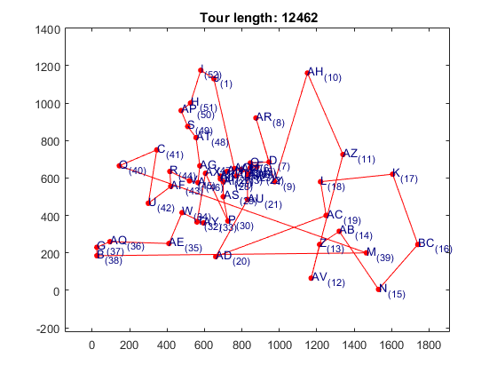

Improving Hopfield Network performance using a Divide-and-Conquer scheme
In order to improve the performance of this heuristic technique, a Divide-and-Conquer strategy based on two phases is proposed. The first phase involves linking cities with the most neighbors to define a set of chains of cities and, secondly, to join these with isolated cities to define the final tour. Both problems are solved by mapping the two TSPs onto their respective CHNs.
Contents
TSPLIB problem and network parameters
rng(6); % For reproducibility
TSPLIB Problem:
problem = tsplib({'berlin52'});
Number of cities:
N = problem.nCities;
Free parameter C:
C = 0.00001;
Creating the tsphopfieldnetwork object using the Divide-and-Conquer simulation method
Providing problem coordinates cities and distance matrix to the tsphopfieldnet network by creating a structure of options
options = tsphopfieldnet.createOptions('coords',problem.coords,'d',problem.d,'type',... problem.type,'simFcn','divide-conquer','tau',2); net = tsphopfieldnet(N,C,options);
Training the network
The default training algorithm is trainty
train(net);
Simulating the network
The simulation is using the algorithm is divide-conquer
sim(net);
Visualizing results
getResults(net) plot(net);
ans =
compTime: 0.4148
energy: [1x466 double]
exitFlag: 1
itersReached: 466
time: [1x466 double]
tourLength: 9201
validPath: 1
visitOrder: [1x52 double]
